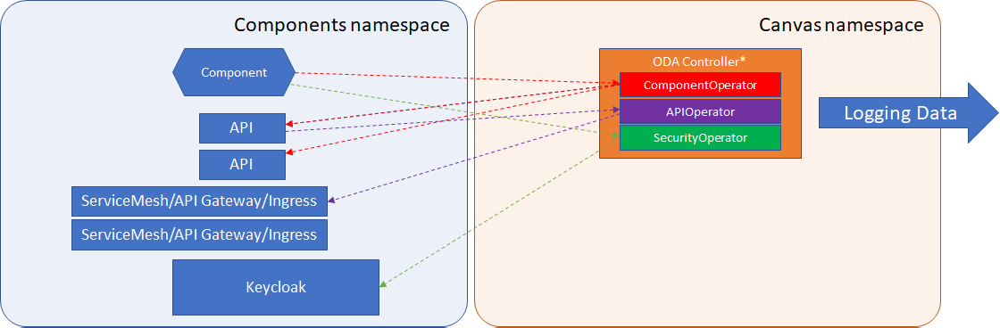

Controller Logging Troubleshooting Guide¶
When you deploy a component to the components namespace, an ODA Controller in the canvas namespace will trigger a set of activity to configure the component. For example, it will:
Examine any APIs described in coreFunction, management or security parts of the component definition, and create the associated
APIcustom resource.The API Operator will take each
APIcustom resource and configure the relavant Service Mesh, Ingress or API Gateway (depending on which API Operator is deployed).The Security Operator will set-up the integration between the component and Identity Management Solution (depending on which SecurityOperator is deployed).
The ODA Controller will stream logging messages to Stdout for all these steps as shown in the diagram below.

You can view this log data using the command:
kubectl logs --selector app=oda-controller-ingress --container=oda-controller-ingress -n canvas -f
You should get an output similar to the picture below:

It is not unusual to see some Warnings in the logs (sometimes multiple processes are trying to patch the same resource and it will show a warning and retry). If the log does not lead to a deployment status: Complete message then examine the recent logs for that component.
The definition for the fields in the logs is as follows: